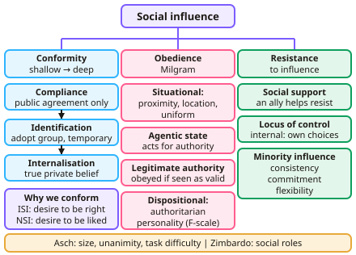

A-level Psychology Year 12 · Topic 1
Social influence, memory and attachment
Social influence, memory and attachment cover three of the most researched areas in psychology.
We will study conformity, obedience, minority influence, social impact theory and the roots of prejudice.
Then we look at models of memory and eyewitness testimony, reconstructive memory, and how attachments form and why they matter.
- 26 subtopics
- 712 questions
- Free: 1.1 notes and 6 questions
In this topic
- 1.1Social influenceFree below · 16 questions
- 1.2MemoryOpen in Full Marks · 16 questions
- 1.3AttachmentOpen in Full Marks · 20 questions
- 1.4Social impact theory (Latané) and obedienceOpen in Full Marks · 28 questions
- 1.5Prejudice and discrimination: Realistic Conflict Theory (Sherif)Open in Full Marks · 27 questions
- 1.6Social Identity Theory (Tajfel and Turner) and prejudiceOpen in Full Marks · 29 questions
- 1.7Reducing prejudice: contact hypothesis and superordinate goalsOpen in Full Marks · 30 questions
- 1.8Reconstructive memory: Bartlett's schema theory and War of the GhostsOpen in Full Marks · 31 questions
- 1.9Conformity: types, explanations and Asch's researchOpen in Full Marks · 20 questions
- 1.10Conformity to social roles: Zimbardo's Stanford Prison ExperimentOpen in Full Marks · 25 questions
- 1.11Obedience: Milgram's research and situational variablesOpen in Full Marks · 21 questions
- 1.12Explanations for obedience: agentic state, legitimacy of authority and the authoritarian personalityOpen in Full Marks · 20 questions
- 1.13Resistance to social influence: social support and locus of controlOpen in Full Marks · 20 questions
- 1.14Minority influence and social changeOpen in Full Marks · 25 questions
- 1.15The multi-store model: coding, capacity and durationOpen in Full Marks · 65 questions
- 1.16Types of long-term memory: episodic, semantic and proceduralOpen in Full Marks · 19 questions
- 1.17The working memory modelOpen in Full Marks · 68 questions
- 1.18Explanations for forgetting: interference and retrieval failureOpen in Full Marks · 24 questions
- 1.19Eyewitness testimony: misleading information and anxietyOpen in Full Marks · 26 questions
- 1.20Improving eyewitness testimony: the cognitive interviewOpen in Full Marks · 21 questions
- 1.21Caregiver–infant interactions, stages of attachment and the role of the fatherOpen in Full Marks · 20 questions
- 1.22Animal studies of attachment: Lorenz and HarlowOpen in Full Marks · 20 questions
- 1.23Explanations of attachment: learning theory and Bowlby's monotropic theoryOpen in Full Marks · 26 questions
- 1.24Types of attachment: Ainsworth's Strange Situation and cultural variationsOpen in Full Marks · 60 questions
- 1.25Maternal deprivation and the effects of institutionalisationOpen in Full Marks · 21 questions
- 1.26The influence of early attachment on later relationshipsOpen in Full Marks · 14 questions
1.1 · Free notes
Social influence

Key points
- Types of conformity (Kelman): compliance (public agreement only), identification (adopting group behaviour temporarily) and internalisation (genuine private acceptance).
- Explanations: informational social influence (desire to be right) and normative social influence (desire to be liked).
- Asch found conformity was affected by group size, unanimity and task difficulty; Zimbardo's Stanford Prison Experiment explored conformity to social roles.
- Milgram studied obedience; situational explanations include proximity, location and uniform, and the agentic state and legitimacy of authority.
- Dispositional explanation: the authoritarian personality (Adorno), measured with the F-scale.
- Resistance to social influence comes from social support and an internal locus of control; minority influence relies on consistency, commitment and flexibility.
In more detail
- Kelman's types of conformity: compliance (public only), identification (adopting a group's views while in it) and internalisation (genuine private acceptance).
- Asch's variations: conformity was about 3% with one confederate but about 32% with three; one dissenting ally cut it to about 5.5%.
- Zimbardo's prison study (1973): planned for two weeks but stopped after six days, as guards became abusive.
- Minority influence: Moscovici (1969) found a consistent minority calling blue slides "green" swayed about 8% of answers, but an inconsistent one only about 1%.
- Resisting: social support from a dissenter, and an internal locus of control, help people resist pressure.
Practice
Social influence: 6 questions
Pick an answer to check it, or open the answer for the explanation.
1. Which are Kelman's three types of conformity?
- Compliance, identification, internalisation
- Obedience, compliance, agency
- Normative, informational, social
- Minority, majority, group
Show answer
A: Compliance, identification, internalisation. They differ in how deeply the view is accepted.
2. What is the agentic state?
- Acting on one's own conscience
- Acting as an agent carrying out another person's wishes, feeling less personal responsibility
- Resisting authority
- A personality type
Show answer
B: Acting as an agent carrying out another person's wishes, feeling less personal responsibility. Milgram used this to explain destructive obedience.
3. What is normative social influence?
- Conforming because others are likely right
- Conforming to gain approval and be liked
- Obedience to authority
- Resisting the majority
Show answer
B: Conforming to gain approval and be liked. It usually leads to compliance rather than internalisation.
4. Which factor helps people resist social influence?
- An external locus of control
- Social support from an ally
- Unanimous majority
- High task difficulty
Show answer
B: Social support from an ally. A dissenting ally makes independent behaviour much more likely.
5. What makes minority influence effective?
- Changing position often
- Consistency, commitment and flexibility
- Being in the majority
- Using authority
Show answer
B: Consistency, commitment and flexibility. Consistency makes others reconsider their own view.
6. Which type of conformity involves genuinely changing one's private beliefs?
- Compliance
- Identification
- Internalisation
- Obedience
Show answer
C: Internalisation. This is the deepest form of conformity, according to Kelman.
Keep going in Full Marks
Full Marks has 16 questions on Social influence (10 more than here), set out in practice levels. You also get notes and 3D models for all 26 subtopics of Social influence, memory and attachment, plus games, timed exams and past papers.
On your exam board
- AQATopic 1: Social influence, Topic 2: Memory, Topic 3: Attachment
- EdexcelTopic 1: Social psychology, Topic 2: Cognitive psychology
Not in the OCR and Cambridge specifications.